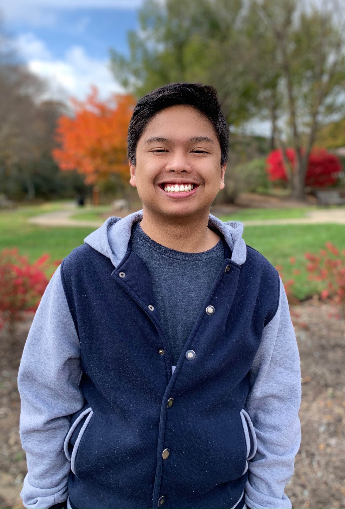
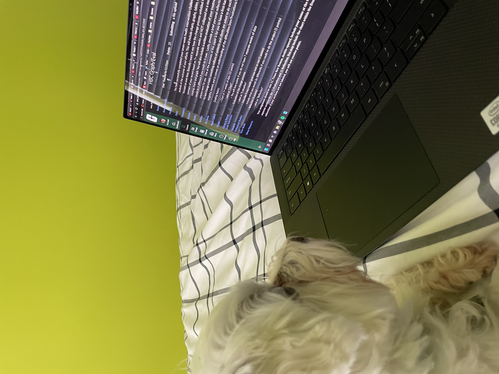

Joe Siapno's Website
Website made by Joe Siapno for BINF 4900
Who am I?
My name is Floren Joachim Siapno, also known as Joe, and I am a senior at the University of North Carolina at Charlotte. I am seeking a Bachelor of Science in Computer Science with a concentration in Bioinformatics, and I plan to graduate in May 2023.
Picture of Myself:

Picture of My Dog:

What have I done for BINF 4900?
I was the Chief Financial Officer for MalPal, an AI image detection system that was designed to combat malnutrition in hospitals. As CFO, I have done many things to ensure that our group succeeded with our goals such as:
- Conducted market research for MalPal, which included finding the TAM, SAM, and SOM that MalPal fits into
- Wrote the financial summary for every Pre-Read Document, which includes the customer discovery data, market size, profits to date, wins to date, and hurdles to overcome
- Wrote the financial, customers, and path toward your milestones for every Pre-Read Document
- Created the ecosystem, milestones, and budget breakdown diagrams for every presentation
- Attended every class session and relayed information to missing team members
- Conducted meeting times for presentation practice
- Turned in most of the assignments on Canvas to make sure that we get credit
- Edited every document and presentation for any misspellings and wrong formatting